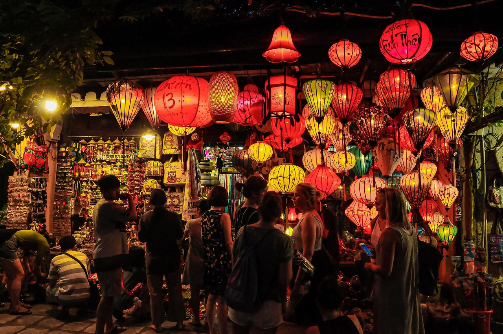
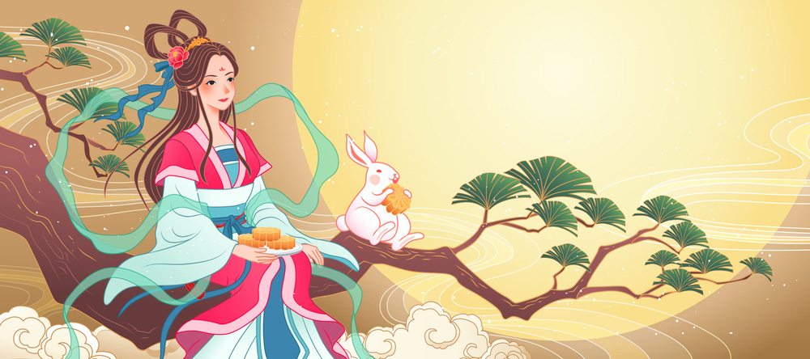
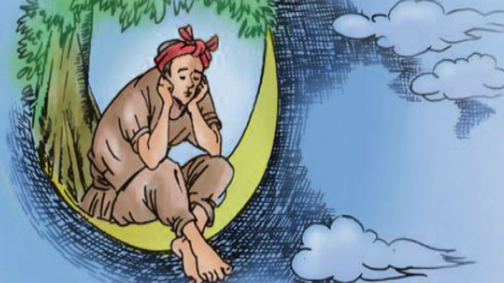
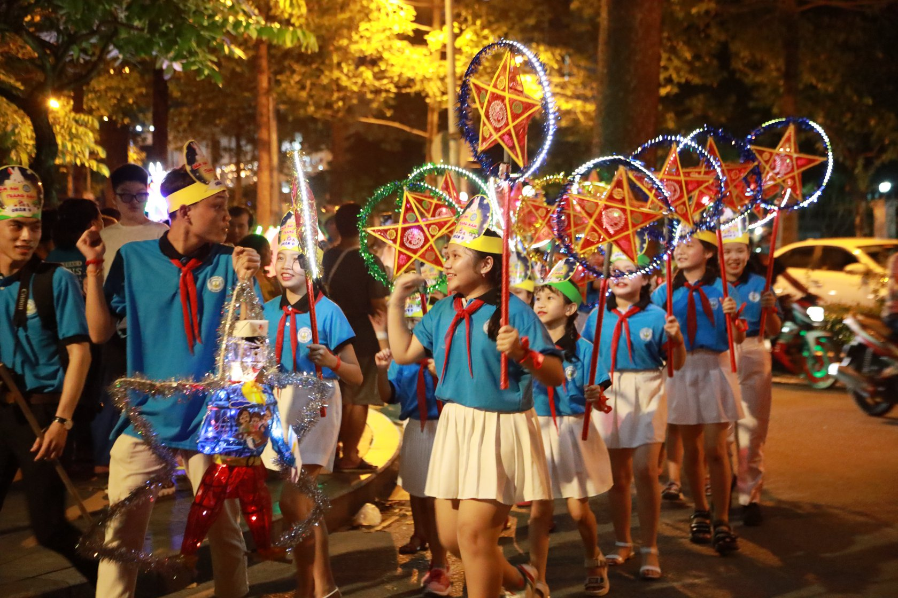
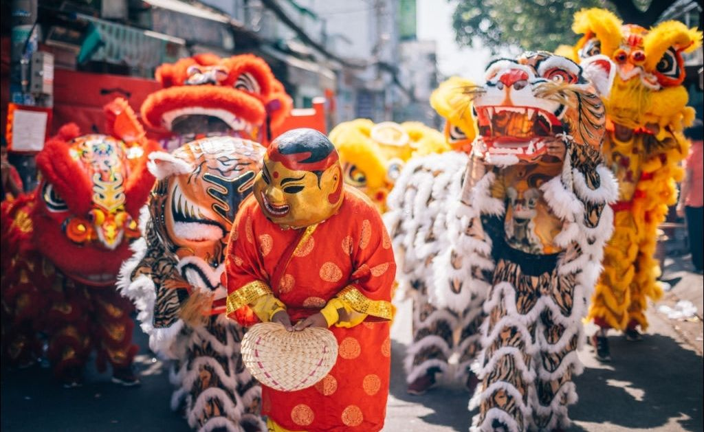

Tết Trung Thu - Ánh Trăng Lung Linh, Niềm Vui Trẻ Thơ
Tết Trung Thu là một trong những lễ hội truyền thống quan trọng và được mong chờ nhất trong năm của người Việt Nam. Được tổ chức vào ngày 15 tháng 8 âm lịch, khi trăng tròn và sáng nhất, Tết Trung Thu không chỉ là dịp để thưởng thức bánh trung thu, ngắm trăng mà còn là thời điểm để gia đình sum họp, trẻ em vui chơi và tham gia các hoạt động văn hóa đặc sắc. Trong bài viết này, chúng ta sẽ cùng khám phá chi tiết về nguồn gốc, ý nghĩa và các phong tục đặc trưng của Tết Trung Thu.
1. Giới thiệu về Tết Trung Thu
Tết Trung Thu, hay còn được gọi là Tết Trông Trăng, là một lễ hội cổ truyền không chỉ phổ biến ở Việt Nam mà còn ở nhiều quốc gia Đông Á khác. Đây là dịp để mọi người bày tỏ lòng biết ơn đối với thiên nhiên, cầu mong mùa màng bội thu và gia đình đoàn viên. Tại Việt Nam, Tết Trung Thu được xem là ngày hội của trẻ em, khi các em được tham gia rước đèn, múa lân và nhận quà từ người lớn. Không khí lễ hội tràn ngập niềm vui, tiếng cười và sự ấm áp của tình thân.
Ảnh Tết Trung Thu
2. Nguồn gốc và ý nghĩa của Tết Trung Thu
Tết Trung Thu có nguồn gốc từ Trung Quốc, nhưng khi du nhập vào Việt Nam, lễ hội này đã được biến tấu để mang đậm bản sắc văn hóa của người Việt. Theo truyền thuyết Trung Quốc, Tết Trung Thu gắn liền với câu chuyện về Hằng Nga và Hậu Nghệ. Hằng Nga là một tiên nữ xinh đẹp sống trên cung trăng, và ngày 15 tháng 8 âm lịch là dịp để người dân ngắm trăng, tưởng nhớ đến nàng.
Ảnh hằng nga
Ở Việt Nam, Tết Trung Thu còn nổi tiếng với câu chuyện dân gian về chú Cuội và cây đa. Tương truyền, chú Cuội vì sơ ý mà bị cây đa bay lên cung trăng. Từ đó, mỗi dịp trăng tròn, người Việt lại kể cho nhau nghe câu chuyện về chú Cuội ngồi dưới gốc đa trên mặt trăng, tạo nên nét đặc trưng riêng biệt cho lễ hội.
Ảnh chú cuội
Ý nghĩa
Tết Trung Thu mang ý nghĩa sâu sắc về sự đoàn viên và sum họp gia đình. Đây là dịp để các thành viên trong gia đình quây quần bên nhau, cùng thưởng thức bánh trung thu, ngắm trăng và chia sẻ những câu chuyện ấm áp. Ngoài ra, lễ hội còn thể hiện lòng biết ơn đối với thiên nhiên và niềm mong ước về một cuộc sống an lành, hạnh phúc.
3. Các hoạt động và phong tục trong Tết Trung Thu
Các hoạt động nổi bật trong Tết Trung Thu:
Rước đèn
Rước đèn là hoạt động không thể thiếu trong đêm Trung Thu. Trẻ em cầm trên tay những chiếc đèn lồng đủ hình dáng, màu sắc như đèn ông sao, đèn kéo quân, đèn hình con vật, và cùng nhau rước đèn quanh xóm. Tiếng hát vang của các bài ca Trung Thu như “Rước đèn tháng Tám” làm cho không khí thêm phần rộn ràng.
Ảnh rước đèn ngày trung thu
Múa Lân
Múa lân (hay múa sư tử) là một tiết mục biểu diễn đặc sắc trong dịp Trung Thu. Đoàn múa lân thường đi từ nhà này sang nhà khác, mang theo tiếng trống rộn ràng và những điệu múa uyển chuyển. Người Việt tin rằng múa lân tượng trưng cho sự may mắn và giúp xua đuổi tà ma.
Ảnh về hoạt động múa lân
Bánh Trung Thu
Bánh trung thu là biểu tượng không thể thiếu của lễ hội. Có hai loại chính là bánh nướng và bánh dẻo, với nhiều hương vị như đậu xanh, thập cẩm, trà xanh, v.v. Bánh trung thu không chỉ là món ăn ngon mà còn là món quà ý nghĩa để biếu tặng người thân, bạn bè, thể hiện sự trân trọng và tình cảm.
.jpg)
Ảnh bánh trung thu
4. Kết luận
Tết Trung Thu không chỉ là một lễ hội truyền thống mà còn là một phần không thể thiếu trong văn hóa của người Việt Nam. Đây là dịp để mọi người tạm gác lại những bộn bề của cuộc sống, sum họp bên gia đình và cùng nhau tận hưởng những khoảnh khắc vui tươi, ấm áp. Đặc biệt, đối với trẻ em, Tết Trung Thu là một kỷ niệm đẹp, nơi các em được vui chơi, học hỏi và lưu giữ những ký ức tuổi thơ đáng nhớ.
Hy vọng qua bài viết này, bạn đã có cái nhìn toàn diện và sâu sắc hơn về Tết Trung Thu – một nét đẹp văn hóa truyền thống của dân tộc Việt Nam. Chúc bạn và gia đình có một mùa Trung Thu an lành, hạnh phúc và tràn đầy niềm vui!